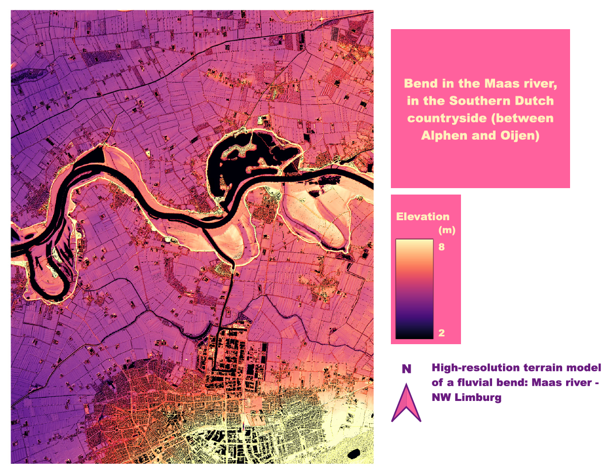
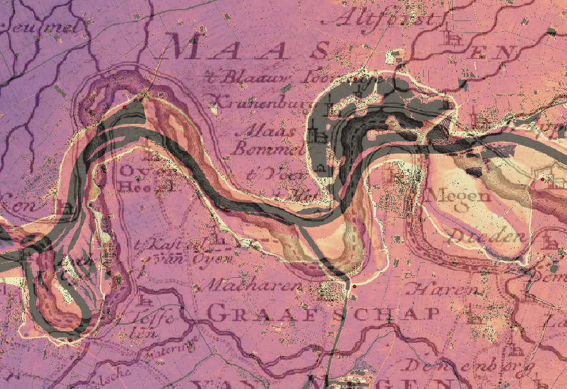
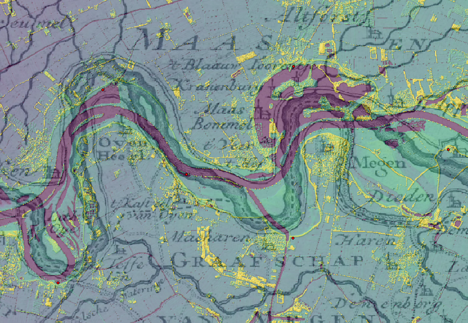
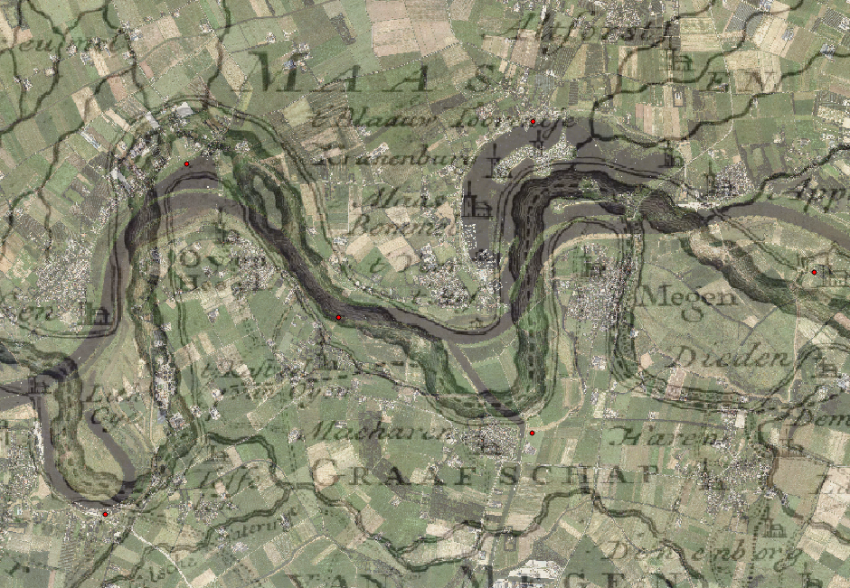

Digital Elevation Models
The objective of this assignment was to compare an old map to a modern Digital Elevation Model (DEM). My region of interest (ROI) for this assignment is a bend in the Maas river, west of Nijmegen and northwest of Limburg. More specifically, my ROI is area in which the Maas river passes between Alphen and Oijen. I selected this region because I found the shape of the bend in the river fascinating and I felt that it would make for an interesting map. I also liked that the river is fairly wide in this area, which would make it stand out much more on the map than a more narrow stream for example. I felt that this specific region was appropriate in terms of area for the purpose of this assignment.The old map that I selected was made in the year of 1748. It is titled “Carte particuliere d'une partie du Brabant Hollandois, du Gueldre et de Cleves, ou les environs de Grave, Ravestein, Helmont, Nimégue, Fort de Schenk, Cleves, Gennip, Emmerick &c.”. The portion of the map that I utilized is located in the upper left corner. The cartographer was Johannes Condet (1711-1781). There does not seem to be any information about who the commissioner was. In the university library notes, it is stated that the map was hand-drawn and that inundationareas were colored by Capt. Engineer J. van Westenhout (signed at the bottom of the right sheet). It is also the fourth part of a mounted four-part map, pasted on linen with a total size of 44 x 220 cm. The map is available on OldMapsOnline or via this link.The data that was used to create the DEM was obtained from GeoTiles. The DTM, DSM, and RGB 1/2 meter data was downloaded for four tiles. This data was then imported into QGIS to create the DTM, DSM, and RGB models.
Fig 1: DTM print with DSM shadow layer overlay.
In addition to the print I created, I also made three different maps with the old map overlayed on top. My DTM (fig. 2) uses a purple/pink to yellow color gradient to represent the elevation levels of the terrain. I wanted the contrast to be intense so that the differences in values did not go unnoticed. I also wanted to use a color gradient that could also be more accessible to a red- green colorblind audience. For my DTM, I also used a DSM shadow layer to add shadow details where buildings or other surface elements may exist. My DSM (fig. 3) uses a blue/green to yellow color gradient to represent the elevation levels of the surface. I chose this color gradient because the green and blue hues felt appropriate for the symbolization of surface elements such as trees and other greenness. Although green and yellow hues are usually difficult to distinguish for an observer with red-green colorblindness, I tried to adjust the minimum and maximum values so that the contrast would be intense enough to not go unnoticed. Finally, for my RGB map (fig. 4) I also experimented with a DSM shadow layer overlay, which I initially expected to make more of a visible difference. However, in the end it seemed that it didn’t, so I did not use the shadow layer overlay. What I find most interesting about all my maps with the old map overlay is that the bend of the river does not match up perfectly. This could be due to a number of reasons. My georeferencing and point matching may have been off, or the old map may have simply been inaccurate. Or, perhaps the land morphology could’ve changed in the nearly 300 years between the dates of the maps.
Fig 2: DTM with old map overlay.
Fig 3: DSM with old map overlay.
Fig 4: RGB with old map overlay.